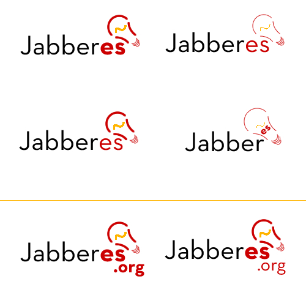

Navegación del libro
Navegación
Web JabberES
Comentarios: 2694
Nodos: 1177
Nuestro servidor Jabber


Enlázanos

Cópianos

Logos para JabberEs.org
Contenido archivado
El contenido de la web se encuentra archivado y no se podrá crear nuevo contenido. Más información.
En septiembre de 2003 se convocó un concurso de logotipos para JabberEs.org, al estilo de lo que hicieron en Jabber.org y JabberPl.org. Aquí tenemos recipilados todos los logos que participaron.
-
Ramon Rey Vicente (ramon.rey at hispalinux.es)

-
Ramon Rey Vicente (ramon.rey at hispalinux.es)

-
Ramon Rey Vicente (ramon.rey at hispalinux.es)

-
Ramon Rey Vicente (ramon.rey at hispalinux.es)

-
Ramon Rey Vicente (ramon.rey at hispalinux.es)

Badlop opina: es difícil e innecesario recordar 'http://www.' opino que ese texto se podría quitar, reduciéndolo así a solo 'jabberes.org', por ejemplo, que es más impactante y fácil de recordar.
-
Coco

Coco responde a Badlop: ¿te refieres a esto? A mi me gusta la idea de Ramon :P
Badlop se come el coco: exacto. Al menos teóricamente, la comunidad es 'JabberEs [?].org'. Uno de los recursos de que disponemos es la web 'www', y la forma de acceder a ésta es por HTTP 'http://', pero la comunidad es 'JabberEs [?].org'. Si acaso el prefijo 'http://www.' se pone en gris clarito. Fíjate también en el logo de http://www.jabberpl.org/ . Es más fácil de recordar 'JabberPL [?]' que 'http://www.jabberpl.org'.
Badlop: Ideas de bombillas (tengo los originales en papel para sacarlos con más calidad). Si agradan las formas, se puede colorear a gusto, añadir líneas que muestren la luz etc. Y retocarlo un poco, engrosar las líneas de contorno... La gracia está en que nota que está hecho a mano alzada, con trazos rápidos y seguros.
Este dibujo a mano es de mi hermano, así que no hay problemas de copyright:

Propuestas de Alucard


- Bueno, aqui pongo un "remix" de los logos de alucard (con tu permiso...) :) (Coco) (Era el que te faltaba :P )

Alucard responde a Coco: ¡Jo que fallo!, ¡como se me ha podido pasar esa posibilidad! Pues toma, otro mas de propina ;P

Y esta basada en la idea de Coco:


- Y otro mas :P


- Logos de [capi x] JID <capi_x@jabber.org>
Las imágnes usadas no son mias, pero han sido obtenidas de diversos sites, todas ellas, estan libres de copyright.


Estos son los mismos logos pero esta vez he utilizado una bombilla hecha por mi en SVG


reidrac
Logos... no ha habido forma de meter una bombilla que quede bien, se puede añadir si eso.

- Reset Reboot

- _SAYA_ Ahi queda eso, considerarlos como GPL


- Coco


- whitetoe


- Lingam - Basado minimamente en el logo oficial.

- Thork - Otro diseño basado en algo del logo oficial.
- Banner para las partes superiores de la pagina:

- Imagen para los pies de las paginas:

Logos de Usro3 añadidos el 3 de julio de 2004: 
|
2003-2010 © JabberES
Jabber® marca registrada de Jabber, Inc. |


|